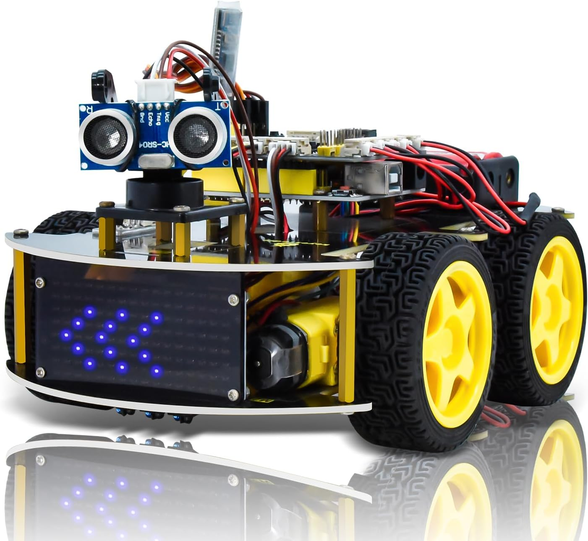
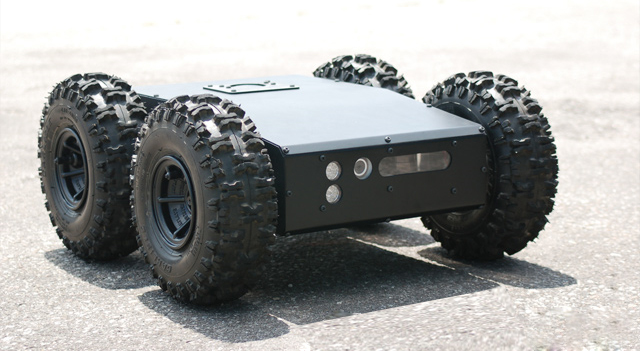
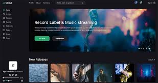

Career Objective
A creative and collaborative student skilled in project communication, resource management, and team
leadership to develop real-life solutions. Passionate about driving projects to success through both strategic
thinking and hands-on contributions in software development.
Projects
Smart Car using Arduino:

Technology used:b Arduino, ultrasonic sensors, C , wireless modules, and microcontrollers.
Contribution: Developed a programmable vehicle capable of obstacle avoidance, path following, remote
control, and environmental sensing
HeavyLoad Rover:

Technology used: Raspberry Pi, Python, motor controllers, and sensors.
Contribution: Developed a robust vehicle capable of transporting 10kg across complex terrains, executing
autonomous tasks with efficient motor control and sensor management.
Music Website:

Technology used: HTML, CSS, JavaScript.
Contribution: Built a responsive music website with a vast track library, offering an intuitive and stylish user
experience across all devices.
Skills
Programming: Python, Java, SQL, HTML, CSS, JavaScript, Node.js
Interpersonal: Presentation, Adaptability, Communication, Leadership, Multitasking
Education
- B.Tech Computer Science - Presidency University (2021 - 2025) | CGPA: 8.29
- Class XII - Carmel PU College (2019 - 2021) | 89%
- Class X - Atreya Vidyaniketan (2007 - 2019) | 89%
Certifications
- Generative AI - Google Cloud
- Power BI - Simpli Learn
- Machine Learning Algorithms
- Matlab for Data Processing and Visualization
- What is Data Science - Simpli Learn
Achievements
- NCC Sergeant with a C Certificate, selected for inter-battalion shooting competition.
- State-level Kabaddi Player (Runner-up in 2017-18, 2nd runner-up in 2018-19).
- District Throwball Winner (2019-20).
- Active in Eco Club, Solve Ninja, Community Service, and NSS.
Interests
Sports, Motor Enthusiast, Current Affairs, Art, Event Volunteering
Languages:
English | Kannada | Tamil | Hindi